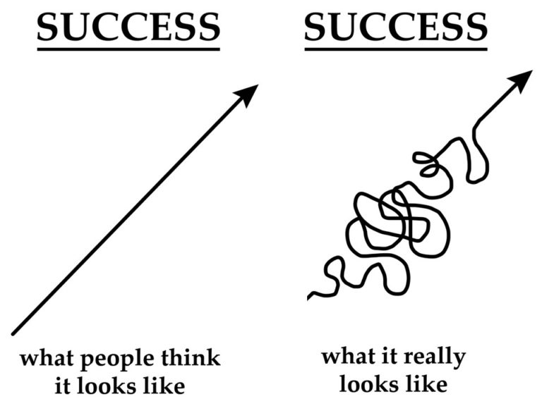

Short-term/Faraway Goals And Other Fun Things
Short-Term Aspirations
My short term aspirations are primarily focused on 3 things:
- Finishing the remainer of my course with strong academic grades;
- Building a habit to being productive with my down-time -- primarily by self studying and working on projects;
- And finally, trying to find better work opportunuities to facilitate better accumulation of IT related experience.
My objective in focusing on these things is to make the most out of the time available now to prepare myself to enter the IT workforce competitively -- which I am expecting to be difficult due to my lack of a focused major or more relevant
Long-Term Goals
My long term goals are not as laid out for me, but I am excited to navigate just look around and explore what I have fun with most -- one step at a time.
Currently I am working as an on-site desktop support technician for schools, and although I am grateful for the opportunity, would like to move onto something that would provide new learning experiences with new technologies, possibly with more of a technical focus than the end-user/customer service skills that are required of me right now.
Desired Skills to Learn and Other Fun Ideas
Since learning of my enthusiasm for technology as a whole, I have been much more keen to explore what kind of skills I could pick up, in addition to fun little tech projects I could get my hands dirty with.
Some skills I would like to pick up include:
- Powershell for automation functions (Powershell in a month of lunches I'm looking at you!).
- Python for automation/scripting functions.
- Functional experience in managing AD environments.
In addition to these, I would like to accumulate more knowledge in Networking and Firewall/OS theory -- hopefully to lean me into the space enough to get a taste of InfoSec!
Other Fun projects
Ambitious career things aside, there are many fun projects I would like to do, such as a DIY Magic mirror, setting up of a personal Plex server and the creation of a personally hosted File Server.
